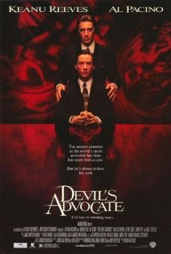
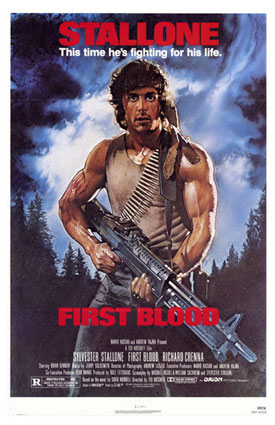
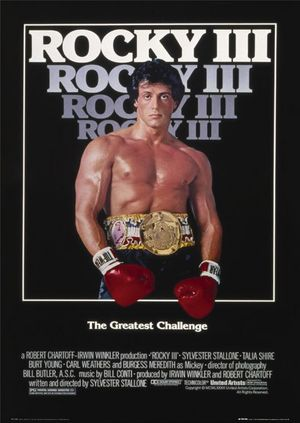
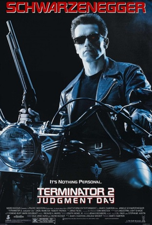
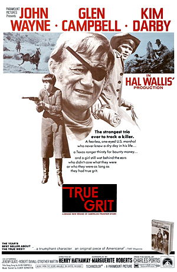
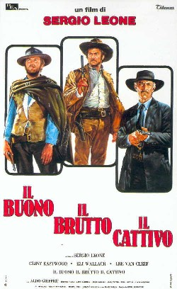

O Advogado do Diabo

The Devil's Advocate (prt: O Advogado do Diabo; bra: Advogado do Diabo) é um filme teuto-estadunidense de 1997, dos gêneros terror, drama e suspense, dirigido por Taylor Hackford, com roteiro de Jonathan Lemkin e Tony Gilroy baseado no romance homônimo de Andrew Neiderman.
Rambo - First Blood

Rambo - First Blood ou simplesmente Rambo (bra: Rambo - Programado para Matar; prt: A Fúria do Herói), é um filme norte-americano de 1982 dirigido por Ted Kotcheff, produzido por Mario Kassar e Andrew G. Vajna, com roteiro de David Morrell, Michael Kozoll, William Sackheim e Sylvester Stallone. A história é baseada na obra de mesmo título de David Morrell, publicada em 1972. O título original First Blood refere-se à frase "They drew first blood, not me!", dita pelo personagem no filme.
Rocky III

Rocky III bra: Rocky III - O Desafio Supremo, é um filme americano de drama esportivo de 1982 escrito, dirigido, e estrelado por Sylvester Stallone. É a terceira parte da série de filmes Rocky, e a segunda na franquia a ser dirigida por Stallone.
Terminator 2: Judgment Day

Terminator 2: Judgment Day também conhecido como Terminator 2 e T2 (bra: O Exterminador do Futuro 2 - O Julgamento Final; prt: O Exterminador Implacável 2 - O Dia do Julgamento), é um filme de ação e de ficção científica estadunidense de 1991 produzido e dirigido por James Cameron, que co-escreveu o roteiro com William Wisher. É estrelado por Arnold Schwarzenegger, Linda Hamilton, Robert Patrick e Edward Furlong nos papéis principais.
True Grit

True Grit (bra: Bravura Indômita / prt: A Velha Raposa) é um filme estadunidense de 1969, dos gêneros drama, aventura e faroeste, dirigido por Henry Hathaway, com roteiro de Marguerite Roberts baseado em livro de Charles Portis e trilha sonora de Elmer Bernstein.
The Good, the Bad and the Ugly

The Good, the Bad and the Ugly The Good, the Bad and the Ugly (em italiano: Il buono, il brutto, il cattivo; em alemão: Zwei glorreiche Halunken; no Brasil: Três Homens em Conflito; em Portugal: O Bom, o Mau e o Vilão) é um filme épico de spaghetti western teuto-americano-hispano-italiano de 1966, dirigido por Sergio Leone e estrelado por Clint Eastwood, Lee Van Cleef e Eli Wallach como o trio-título.
Início